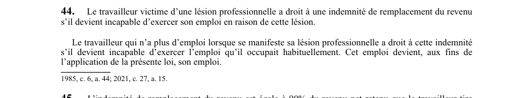

art-44-LATMP : droit à l'indemnité de remplacement du revenu
Un article du wiki ⚖️ Recueil législatif
En bref
Le travailleur victime d'une lésion professionnelle a droit à une indemnité de remplacement du revenu. Ce droit vise le travailleur.
- Condition : incapacité d'exercer son emploi en raison de la lésion.
- Sans emploi : référence à l'emploi occupé habituellement.
- Porte d'entrée du régime d'indemnisation du revenu.
🌐 LegisQuébec · 📄 PDF officiel (page 19)
Texte officiel : capture du PDF

Toucher l'image pour l'agrandir🔗 Ouvrir a cette page : LATMP.pdf : page 19 · texte a jour au 20 février 2024
Jurisprudence
Décisions du recueil citant cet article :
Jurisprudence
- Houle et Distributions Gerry Grondin inc (2020 QCTAT 3322)
- Morin (Succession de) et Rona inc (2013 QCCLP 6889)
- Pomerleau et Sherko constructions de l'Estrie Ltée (à vérifier)
Voir aussi
- art. 45 · l'indemnité de remplacement du revenu est égale à 90 % du revenu net retenu que le travailleur tire annuellement de son emploi.
- art. 46 · présomption : le travailleur est présumé incapable d'exercer son emploi tant que la lésion professionnelle dont il est victime n'est pas consolidée.
- 🔧 Modifié par : LMRSST art. 15 · modifie art.
- ↑ Loi : LATMP
Pages qui pointent ici (14)
- 🎯 Démarrage rapide, conseiller SST Droit du travail
- art-15-LMRSST : modifie l'art. 44 LATMP Recueil législatif
- art-43-LATMP : primauté sur la Loi sur l'accès Recueil législatif
- art-45-LATMP : montant de l'IRR (90 % du revenu net) Recueil législatif
- Démarche en cas de lésion Droit du travail
- Droits et recours du travailleur Droit du travail
- Emploi qu'il occupait habituellement Recueil législatif
- Houle et Distributions Gerry Grondin inc Recueil législatif
- Indemnités de remplacement du revenu (IRR) Droit du travail
- Index des décisions : table de travail Recueil législatif
- LATMP : Chapitre III : Indemnités (IRR et préjudice corporel) Recueil législatif
- Morin (Succession de) et Rona inc Recueil législatif
- PDFs de jurisprudence et de doctrine Recueil législatif
- Pomerleau et Sherko constructions de l'Estrie Ltée Recueil législatif